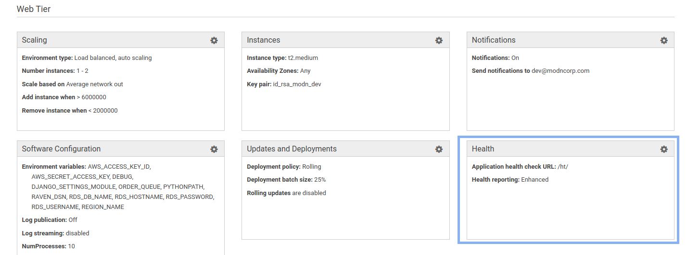

따릉이 사용량
Wed 27 September 2017

파랑 - 실제 주차장에 주차되어있는 수
Read More
파랑 - 실제 주차장에 주차되어있는 수
Read MoreEB에서는 Health check 하는 기능을 기본적으로 포함하고 있다. 이것을 위해서는 Django에서 health check 요청을 허락하는 설정이 필요하다. Route53에서 설정된 Domain으로 요청은 한다고 잘못생각해서 오랫동안 고민했다.

https://gist.github.com/dryan/8271687
try:
EC2_IP = requests.get('http://169.254.169.254/latest/meta-data/local-ipv4').text
ALLOWED_HOSTS.append(EC2_IP …Category: misc
Read More지역코드와 기간을 이용하여 해당기간, 해당지역의 단독다가구 전월세 신고자료를 제공하는 단독다가구 전월세 신고 정보 조회
Category: misc
Read MoreBackend developer at Modn, 2017.07
Backend developer at Modernlab, 2017.04 ~ 2017.07
Backend developer at Truffls, 2016.03 ~ 2016.09 https://truffls.de/en/

Django admin에 신규 기능 추가후 소개, Truffls

직원 기념 사진, Truffls

Tech …
Category: 개발
Read MoreAWS Config Rules, 서울 리전 출시! https://aws.amazon.com/ko/blogs/korea/category/aws-config
임기성 :: 2015 리인벤트 리캡 게이밍 https://www.slideshare.net/awskorea/20151118-reinvent-recap-for-gaming-3-security-on-aws-waf-aws-inspector-config-rules-gisung-lim
AWS Summit Seoul 2016 https://www.slideshare.net/awskorea/agile-security-operational-strategy-leveraging-advanced-security-services-of-aws-gisung-lim